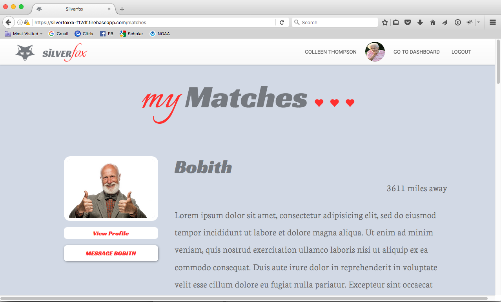
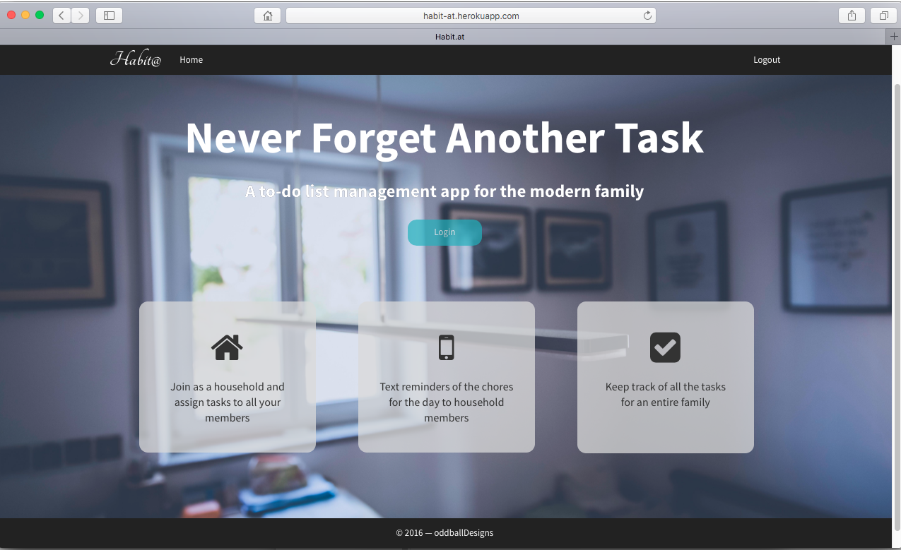
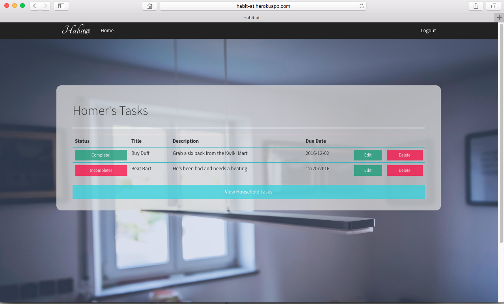

CityWise App


The CityWise mobile app lets citizens quickly and easily report problems they see around town using their mobile device.
View AppIonic | Cordova | Google Oauth | AngularJS | NodeJS | Express | PostgreSQL
Github frontend Github backendCityWise Dashboard


Cities subscribing to CityWise can log in to their dashboard to instantly see reports submitted via the app.
View SiteAngularJS | Bootstrap3 | GoogleMaps API
Github frontendSilver Fox

SilverFox is a dating app for older adults. It is designed for an easy and intuitive user experience.
View SiteLogin: colleen@colleen.com
Password: 1234
React | NodeJS | Express | PostgreSQL | Heroku
Github frontend Github backendHabit@
 Habit@ allows households keep track of chores and tasks, set deadlines and send text reminders of those tasks.
View SiteLogin: homer@thesimpsons.com
Password: 1234
NodeJS | Express | PostgreSQL | Bootstrap | Twilio API | Heroku
View on Github